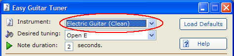
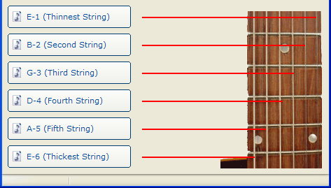

Easy Guitar Tuner - Help
Copyright © 2005 - Daniel Elkins, Nite Revolution Inc.
Contents:
What is Easy Guitar Tuner?
Easy Guitar
Tuner® is a simple and straight-forward program designed to help you tune your
guitar. You can choose between 36 different tunings and 7 different guitars. The
program uses the built-in Windows MIDI functions to simulate each instrument so
it's easier to tune your specific type of guitar.
Using Easy Guitar Tuner.
The first thing you need to do is, choose your instrument. The available instruments are listed in the drop-down list at the top of the window. Refer to figure 1.0 to see where to change your instrument.
Figure 1.0

The next thing you need to do is, choose which tuning you would like to use. Click the drop-down list beneath the instrument's. After you choose your tuning, you will need to choose a note duration. The note duration is how long each note will play (in seconds).
After you have chosen a tuning to use, click one of the string buttons displayed in figure 1.1.
Figure 1.1

The first button on the top (E-1) is the 1st (thinnest) string on your guitar. The last button on the bottom (E-6) is the 6th (thickest) string on your guitar, as indicated by the image to the right of the buttons.